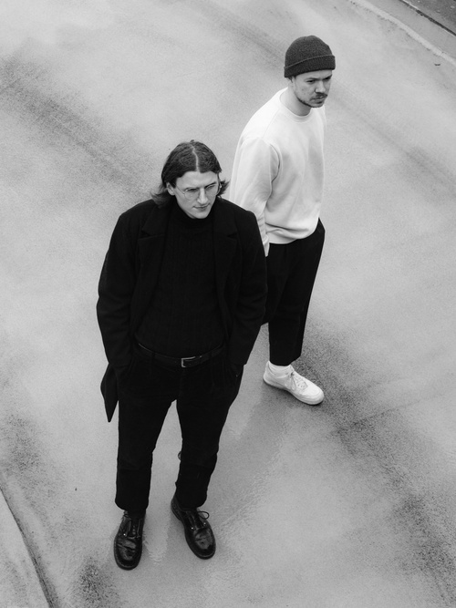

Snow, Sky & Pines are Lucien and Tim from Bochum (DE). They share a love
for indie-folk.
While electronic sounds also awake their musical inspiration, this
project offers a way to combine their favourite bits of music.
